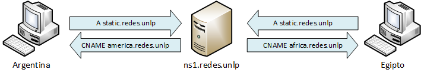

| z, ? | toggle help (this) |
| space, → | next slide |
| shift-space, ← | previous slide |
| b | blank screen |
| d | toggle debug mode |
| ## <ret> | go to slide # |
| c, t | table of contents (vi) |
| f | toggle footer |
| g | toggle follow |
| r | reload slides |
| n | toggle notes |
| p | run preshow |
| P | toggle pause |
| s | choose style |
Leandro Di Tommaso
Esta presentacion: http://leoditommaso.github.io/drinking-mate-presentation/


Se debe dirigir al cliente al servidor más conveniente. Existen dos maneras para identificar los servidores más cercanos:



Las IP que se muestran en los logs de la presentación fueron modificadas a mano para una visión más real de los accesos. El motivo por el que se hizo esto es que VirtualBox implementa toda la red interna usando NAT y entonces se pierden las direcciones IP originales.
Por lo anterior, los logs que se vean en el laboratorio no coincidirán con los mostrados en esta presentación.
root@cdn-argentina:~$ host www.redes.unlp
www.redes.unlp has address 190.205.40.3
root@cdn-argentina:~$ host static.redes.unlp
static.redes.unlp is an alias for america.redes.unlp.
america.redes.unlp has address 189.32.120.14
root@cdn-africa:~# ls -lh /var/cache/nginx/
total 0
root@cdn-america:~# ls -lh /var/cache/nginx/
total 0
root@cdn-asia:~# ls -lh /var/cache/nginx/
total 0
root@cdn-europa:~# ls -lh /var/cache/nginx/
total 0
En este punto se realiza el acceso al sitio www.redes.unlp desde el cliente Argentina.
root@cdn-www:~# tail -f /var/log/nginx/wordpress-access.log
190.205.40.10 - - [31/Aug/2014:20:39:55 +0000] "GET / HTTP/1.1" 200 2759 "-"
"Mozilla/5.0 (X11; Ubuntu; Linux x86_64; rv:31.0) Gecko/20100101 Firefox/31.0"
189.32.120.14 - - [31/Aug/2014:20:39:55 +0000] "GET
/wp-content/themes/twentyfourteen/genericons/genericons.css?ver=3.0.2 HTTP/1.0"
200 22680 "http://www.redes.unlp/" "Mozilla/5.0 (X11; Ubuntu; Linux x86_64;
rv:31.0) Gecko/20100101 Firefox/31.0"
189.32.120.14 - - [31/Aug/2014:20:39:55 +0000] "GET
/wp-content/themes/twentyfourteen/style.css?ver=3.9.2 HTTP/1.0" 200 75703
"http://www.redes.unlp/" "Mozilla/5.0 (X11; Ubuntu; Linux x86_64; rv:31.0)
Gecko/20100101 Firefox/31.0"
189.32.120.14 - - [31/Aug/2014:20:39:55 +0000] "GET
/wp-includes/js/jquery/jquery-migrate.min.js?ver=1.2.1 HTTP/1.0" 200 7200
"http://www.redes.unlp/" "Mozilla/5.0 (X11; Ubuntu; Linux x86_64; rv:31.0)
Gecko/20100101 Firefox/31.0"
189.32.120.14 - - [31/Aug/2014:20:39:55 +0000] "GET
/wp-includes/js/jquery/jquery.js?ver=1.11.0 HTTP/1.0" 200 96402
"http://www.redes.unlp/" "Mozilla/5.0 (X11; Ubuntu; Linux x86_64; rv:31.0)
Gecko/20100101 Firefox/31.0"
189.32.120.14 - - [31/Aug/2014:20:39:55 +0000] "GET
/wp-content/themes/twentyfourteen/js/functions.js?ver=20140319 HTTP/1.0" 200
3393 "http://www.redes.unlp/" "Mozilla/5.0 (X11; Ubuntu; Linux x86_64; rv:31.0)
Gecko/20100101 Firefox/31.0"
189.32.120.14 - - [31/Aug/2014:20:39:55 +0000] "GET
/wp-content/uploads/2014/08/CDN_LL_acceso_clientes-300x188.png HTTP/1.0" 200
22069 "http://www.redes.unlp/" "Mozilla/5.0 (X11; Ubuntu; Linux x86_64; rv:31.0)
Gecko/20100101 Firefox/31.0"
root@cdn-america:~# tail -f /var/log/nginx/access.log
190.205.40.10 - - [31/Aug/2014:20:39:55 +0000] "GET
/wp-content/themes/twentyfourteen/genericons/genericons.css?ver=3.0.2 HTTP/1.1"
304 0 "http://www.redes.unlp/" "Mozilla/5.0 (X11; Ubuntu; Linux x86_64; rv:31.0)
Gecko/20100101 Firefox/31.0"
190.205.40.10 - - [31/Aug/2014:20:39:55 +0000] "GET
/wp-content/themes/twentyfourteen/style.css?ver=3.9.2 HTTP/1.1" 304 0
"http://www.redes.unlp/" "Mozilla/5.0 (X11; Ubuntu; Linux x86_64; rv:31.0)
Gecko/20100101 Firefox/31.0"
190.205.40.10 - - [31/Aug/2014:20:39:55 +0000] "GET
/wp-includes/js/jquery/jquery-migrate.min.js?ver=1.2.1 HTTP/1.1" 304 0
"http://www.redes.unlp/" "Mozilla/5.0 (X11; Ubuntu; Linux x86_64; rv:31.0)
Gecko/20100101 Firefox/31.0"
190.205.40.10 - - [31/Aug/2014:20:39:55 +0000] "GET
/wp-includes/js/jquery/jquery.js?ver=1.11.0 HTTP/1.1" 304 0
"http://www.redes.unlp/" "Mozilla/5.0 (X11; Ubuntu; Linux x86_64; rv:31.0)
Gecko/20100101 Firefox/31.0"
190.205.40.10 - - [31/Aug/2014:20:39:55 +0000] "GET
/wp-content/themes/twentyfourteen/js/functions.js?ver=20140319 HTTP/1.1" 304 0
"http://www.redes.unlp/" "Mozilla/5.0 (X11; Ubuntu; Linux x86_64; rv:31.0)
Gecko/20100101 Firefox/31.0"
190.205.40.10 - - [31/Aug/2014:20:39:55 +0000] "GET
/wp-content/uploads/2014/08/CDN_LL_acceso_clientes-300x188.png HTTP/1.0" 200
22069 "http://www.redes.unlp/" "Mozilla/5.0 (X11; Ubuntu; Linux x86_64; rv:31.0)
Gecko/20100101 Firefox/31.0"
root@cdn-america:~# ls -lh /var/cache/nginx/
total 232K
-rw------- 1 www-data www-data 23K Aug 31 20:39 4cc6a94f110409edd133cc03f44c3c41
-rw------- 1 www-data www-data 3.7K Aug 31 20:39 4fb6e062da05d1bb0f629528ed3c009e
-rw------- 1 www-data www-data 22K Aug 31 20:39 5340bd0fef34cb5228d746c5d5e96732
-rw------- 1 www-data www-data 7.4K Aug 31 20:39 a1906fec651d253e058df6e90534936e
-rw------- 1 www-data www-data 75K Aug 31 20:39 d339df79a142ffe55db8e46797d27c29
-rw------- 1 www-data www-data 95K Aug 31 20:39 e06d67fc53f9f40412d1181595d361e7
root@cdn-america:~# head -19 /var/cache/nginx/4fb6e062da05d1bb0f629528ed3c009e |
tail -18
KEY:
http://www.redes.unlp/wp-content/themes/twentyfourteen/js/functions.js?ver=20140319
HTTP/1.1 200 OK
Server: nginx
Date: Sun, 31 Aug 2014 20:39:55 GMT
Content-Type: application/x-javascript
Content-Length: 3393
Last-Modified: Thu, 28 Aug 2014 05:36:17 GMT
Connection: close
Vary: Accept-Encoding
Accept-Ranges: bytes
/**
* Theme functions file
*
* Contains handlers for navigation, accessibility, header sizing
* footer widgets and Featured Content slider
*
*/
Se vuelven a verificar los logs luego de un nuevo acceso desde el cliente Argentina al sitio www.redes.unlp
root@cdn-www:~# tail -f /var/log/nginx/wordpress-access.log
190.205.40.10 - - [31/Aug/2014:21:37:48 +0000] "GET / HTTP/1.1" 200 2760 "-"
"Mozilla/5.0 (X11; Ubuntu; Linux x86_64; rv:31.0) Gecko/20100101 Firefox/31.0"
root@cdn-america:~# tail -f /var/log/nginx/access.log
190.205.40.10 - - [31/Aug/2014:21:37:47 +0000] "GET
/wp-content/themes/twentyfourteen/genericons/genericons.css?ver=3.0.2 HTTP/1.1"
304 0 "http://www.redes.unlp/" "Mozilla/5.0 (X11; Ubuntu; Linux x86_64; rv:31.0)
Gecko/20100101 Firefox/31.0"
190.205.40.10 - - [31/Aug/2014:21:37:47 +0000] "GET
/wp-content/themes/twentyfourteen/style.css?ver=3.9.2 HTTP/1.1" 304 0
"http://www.redes.unlp/" "Mozilla/5.0 (X11; Ubuntu; Linux x86_64; rv:31.0)
Gecko/20100101 Firefox/31.0"
190.205.40.10 - - [31/Aug/2014:21:37:47 +0000] "GET
/wp-includes/js/jquery/jquery-migrate.min.js?ver=1.2.1 HTTP/1.1" 304 0
"http://www.redes.unlp/" "Mozilla/5.0 (X11; Ubuntu; Linux x86_64; rv:31.0)
Gecko/20100101 Firefox/31.0"
190.205.40.10 - - [31/Aug/2014:21:37:47 +0000] "GET
/wp-includes/js/jquery/jquery.js?ver=1.11.0 HTTP/1.1" 304 0
"http://www.redes.unlp/" "Mozilla/5.0 (X11; Ubuntu; Linux x86_64; rv:31.0)
Gecko/20100101 Firefox/31.0"
190.205.40.10 - - [31/Aug/2014:21:37:47 +0000] "GET
/wp-content/themes/twentyfourteen/js/functions.js?ver=20140319 HTTP/1.1" 304 0
"http://www.redes.unlp/" "Mozilla/5.0 (X11; Ubuntu; Linux x86_64; rv:31.0)
Gecko/20100101 Firefox/31.0"
190.205.40.10 - - [31/Aug/2014:21:37:48 +0000] "GET
/wp-content/uploads/2014/08/CDN_LL_acceso_clientes-300x188.png HTTP/1.1" 304 0
"http://www.redes.unlp/" "Mozilla/5.0 (X11; Ubuntu; Linux x86_64; rv:31.0)
Gecko/20100101 Firefox/31.0"
"La Bioguía es el portal y la comunidad digital más grande de habla hispana de la nueva cultura sustentable."

Con los cambios realizados, se logran alcanzar los 4.000 visitantes simultáneos, pero el techo cambió.